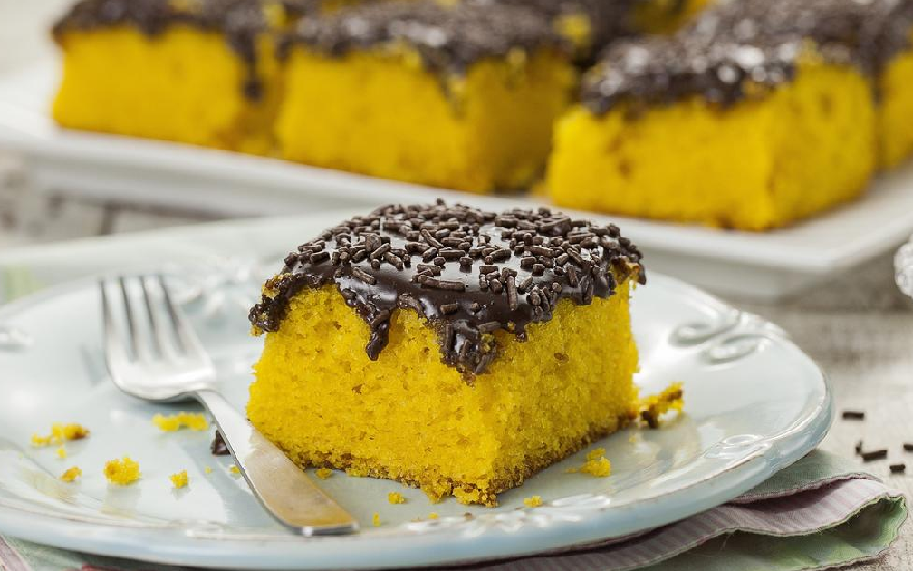
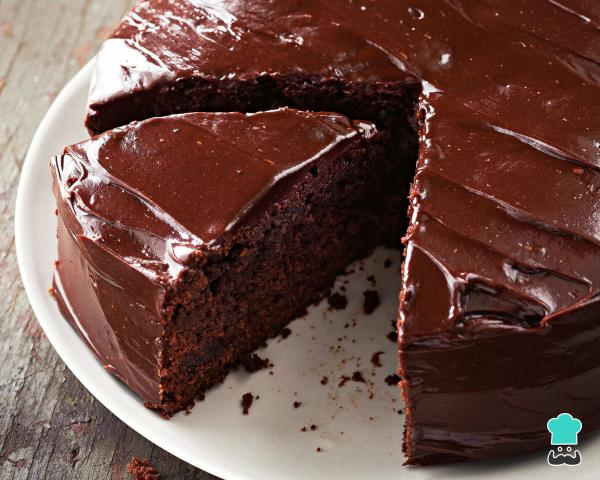
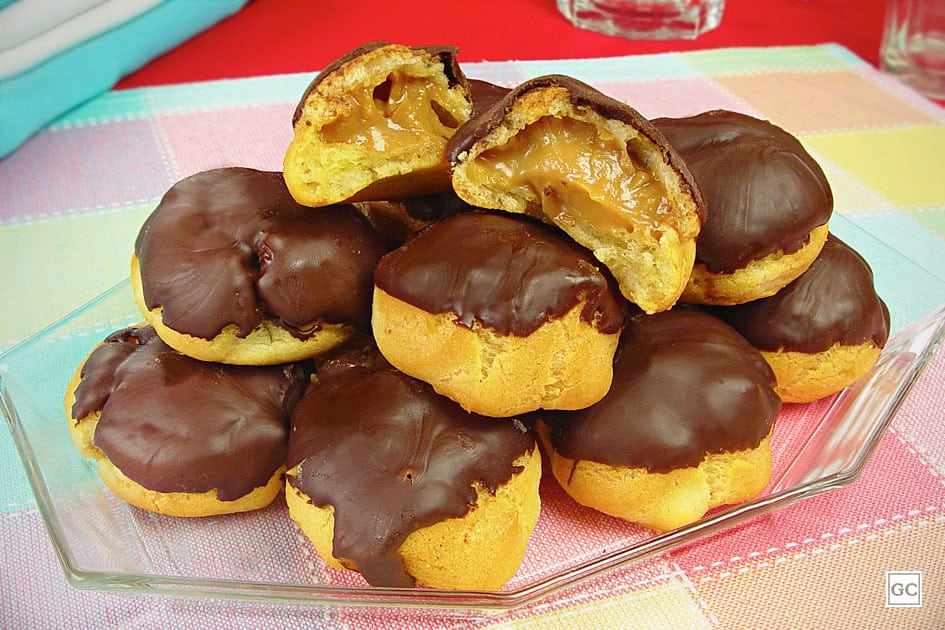

Bolo de Cenoura

Modo de Fazer
- Em um liquidificador, adicione a cenoura, os ovos e o óleo, depois misture.
- Acrescente o açúcar e bata novamente por 5 minutos.
- Em uma tigela ou na batedeira, adicione a farinha de trigo e depois misture novamente.
- Acrescente o fermento e misture lentamente com uma colher.
- Asse em um forno preaquecido a 180° C por aproximadamente 40 minutos.
Bolo de Chocolate

Modo de Fazer
- Em um liquidificador adicione os ovos, o chocolate em pó, a manteiga, a farinha de trigo, o açúcar e o leite, depois bata por 5 minutos.
- Adicione o fermento e misture com uma espátula delicadamente.
- Em uma forma untada, despeje a massa e asse em forno médio (180 ºC) preaquecido por cerca de 40 minutos. Não se esqueça de usar uma forma alta para essa receita: como leva duas colheres de fermento, ela cresce bastante! Outra solução pode ser colocar apenas uma colher de fermento e manter a sua receita em uma forma pequena.
Brownie

Modo de Fazer
- Derreta a manteiga.
- Em uma tigela, acrescente os ovos e o açúcar peneirado e mexa bem até ficar liso e homogêneo.
- Em seguida, coloque a manteiga, o nescau e a farinha de trigo peneirados e mexa bem.
- Distribua em uma forma untada e polvilhada com nescau (20cm x 20cm).
- Deixe assar no forno em 180° C durante 35 minutos.
Carolina

Modo de Fazer
- Leve a água, a farinha e a margarina ao fogo brando até soltar da panela.
- Mexa até a massa ficar "amarelinha".
- Espere esfriar, acrescente os ovos inteiros e bata por 3 minutos.
- Coloque na forma e asse em 205°C por 35/45 minutos, dependendo do forno.
- Deixe assar até dourar !
- Deixe esfriar fora do forno.
- Recheie e cubra a gosto !